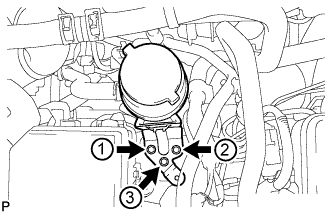
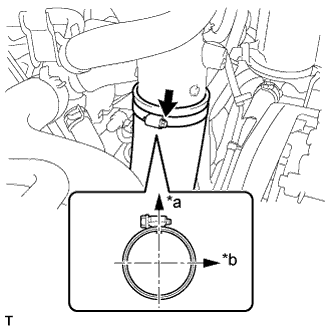
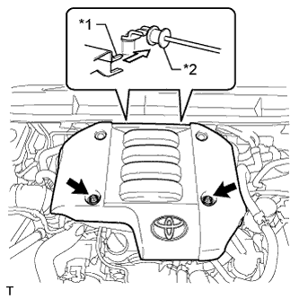

ДВИГАТЕЛЬ В СБОРЕ (для моделей с DPF) > УСТАНОВКА |
| 1. УСТАНОВИТЕ ПЕРЕДНЮЮ ПОДУШКУ ОПОРЫ ДВИГАТЕЛЯ |
Установите 2 передних подушки опоры двигателя и закрепите их 2 гайками.
Присоедините зажим и подсоедините 2 шланга.
| 2. УСТАНОВИТЕ ЖГУТ ЭЛЕКТРОПРОВОДКИ ДВИГАТЕЛЯ |
Закрепите жгут электропроводки двигателя на двигателе.
| 3. СНИМИТЕ ДВИГАТЕЛЬ СО СТЕНДА |
 |
Установите 2 крюка для вывешивания двигателя, закрепив их 2 болтами, как показано на рисунке.
| *1 | Крюк для вывешивания двигателя № 1 |
| *2 | Крюк для вывешивания двигателя № 2 |
| Крюк для вывешивания двигателя № 1 | 12284-30020 |
| Крюк для вывешивания двигателя № 2 | 12282-67030 |
| Болт | 91552-81014 и 91642-81030 |
С помощью устройства для подъема двигателя и цепного блока подвесьте двигатель.
Снимите двигатель со стенда.
| 4. УСТАНОВИТЕ ЗАДНЮЮ КРЫШКУ |
Установите заднюю крышку и закрепите ее болтом.
| 5. УСТАНОВИТЕ ВЕДУЩИЙ ДИСК КРЫЛЬЧАТКИ НАСОСА (для моделей с автоматической трансмиссией) |
 |
Удерживайте шкив коленчатого вала с помощью SST.
 |
Установите маховик с коронной шестерней, ведущий диск крыльчатки насоса и заднюю распорную втулку ведущего диска на коленчатый вал.
| *1 | Маховик и коронная шестерня |
| *2 | Ведущий диск крыльчатки насоса |
| *3 | Задняя распорная втулка ведущего диска |
| *a | Сторона двигателя |
| *b | Сторона трансмиссии |
Очистите болты и болтовые отверстия.
 |
В несколько этапов вверните и равномерно затяните 8 болтов. Последовательность затяжки показана на рисунке.
| 6. УСТАНОВИТЕ МАХОВИК В СБОРЕ (для моделей с механической трансмиссией) |
Очистите болты и болтовые отверстия.
Нанесите герметик-фиксатор на 2-3 витка резьбы на конце каждого болта.
|
Удерживайте шкив коленчатого вала с помощью SST.
Установите маховик на коленчатый вал.
 |
Установите и равномерно затяните 8 болтов в последовательности, показанной на рисунке.
| 7. УСТАНОВИТЕ КРЫШКУ ШКИВА КОЛЕНЧАТОГО ВАЛА |
Закрепите крышку шкива коленчатого вала 2 болтами.
| 8. УСТАНОВИТЕ ВЕДОМЫЙ ДИСК СЦЕПЛЕНИЯ В СБОРЕ (для моделей с механической трансмиссией) |
Вставьте SST в ведомый диск сцепления. Затем вставьте SST (вместе с ведомым диском сцепления) в маховик, чтобы установить ведомый диск сцепления.
 | Со стороны маховика |
| 9. УСТАНОВИТЕ КОЖУХ СЦЕПЛЕНИЯ В СБОРЕ (для моделей с механической трансмиссией) |
 |
Совместите сборочные метки кожуха сцепления и маховика.
| *a | Метка |
Равномерно затяните 6 болтов в последовательности, показанной на рисунке, начиная с болта, который расположен сверху около штифта.
| 10. ПРОВЕРЬТЕ И ОТРЕГУЛИРУЙТЕ КОЖУХ СЦЕПЛЕНИЯ В СБОРЕ (для моделей с механической трансмиссией) |
 |
С помощью индикатора часового типа с роликовым датчиком измерьте отклонение конца диафрагменной пружины.
| 11. УСТАНОВИТЕ ДВИГАТЕЛЬ В СБОРЕ |
Медленно опустите двигатель в моторный отсек.
Закрепите двигатель 4 болтами и 4 гайками.
| *1 | Захват (стопор) |
| *2 | Кронштейн |
| *a | Правильно |
| *b | Неправильно |
Выверните 2 болта и снимите 2 крюка для вывешивания двигателя.
| 12. УСТАНОВИТЕ ЗАДНЮЮ ПОДУШКУ ОПОРЫ ДВИГАТЕЛЯ № 1 |
Установите заднюю подушку опоры двигателя № 1 и закрепите ее 4 болтами.
| 13. УСТАНОВИТЕ АВТОМАТИЧЕСКУЮ ТРАНСМИССИЮ В СБОРЕ (для моделей с автоматической трансмиссией) |
| 14. ВВЕРНИТЕ УСТАНОВОЧНЫЙ БОЛТ ВЕДУЩЕГО ДИСКА И ГИДРОТРАНСФОРМАТОРА (для моделей с автоматической трансмиссией) |
Проверните коленчатый вал, чтобы обеспечить доступ к местам установки 6 установочных болтов гидротрансформатора, и, удерживая ключом болт шкива коленчатого вала, вверните каждый болт.
| 15. УСТАНОВИТЕ МЕХАНИЧЕСКУЮ ТРАНСМИССИЮ В СБОРЕ (для моделей с механической трансмиссией) |
| 16. УСТАНОВИТЕ ТЕПЛО- И ШУМОИЗОЛИРУЮЩИЙ ЭКРАН МАСЛЯНОГО ПОДДОНА |
Установите тепло- и шумоизолирующий экран масляного поддона и закрепите его 2 болтами.
| 17. УСТАНОВИТЕ КАРДАННЫЙ ВАЛ В СБОРЕ |
Совместите метки на фланце карданного вала и фланце дифференциала.
Установите карданный вал в сборе и закрепите его 4 болтами, 4 шайбами и 4 гайками.
Нанесите метки на фланец карданного вала и фланец раздаточной коробки.
Закрепите карданный вал в сборе с помощью 4 шайб и 4 гаек.
| 18. УСТАНОВИТЕ ПЕРЕДНИЙ КАРДАННЫЙ ВАЛ В СБОРЕ |
Совместите метки на вилке и фланце дифференциала.
Установите карданный вал в сборе и закрепите его 4 болтами, 4 шайбами и 4 гайками.
Совместите метки на вилке и фланце раздаточной коробки.
Закрепите карданный вал в сборе с помощью 4 шайб и 4 гаек.
| 19. УСТАНОВИТЕ ПРИЕМНУЮ ТРУБУ В СБОРЕ |
| 20. УСТАНОВИТЕ СТАРТЕР В СБОРЕ (для моделей мощностью 2,2 кВт) |
Для моделей с механической трансмиссией:
Установите стартер, закрепив его болтом и гайкой.
Для моделей с автоматической трансмиссией:
Установите стартер, закрепив его болтом и 2 гайками.
Подсоедините провод стартера, зафиксировав соединение гайкой.
Подсоедините разъем стартера.
Установите заглушку контакта.
| 21. УСТАНОВИТЕ СТАРТЕР В СБОРЕ (для моделей мощностью 2,7 кВт) |
Для моделей с механической трансмиссией:
Установите стартер, закрепив его болтом и гайкой.
Для моделей с автоматической трансмиссией:
Установите стартер, закрепив его болтом и 2 гайками.
Подсоедините провод стартера, зафиксировав соединение гайкой.
Подсоедините разъем стартера.
Установите заглушку контакта.
| 22. ПОДСОЕДИНИТЕ ЖГУТ ЭЛЕКТРОПРОВОДКИ ДВИГАТЕЛЯ |
 |
Присоедините уплотнительную шайбу к опоре жгута проводов.
| *1 | Уплотнительная шайба |
| *2 | Опора жгута проводов |
 |
Пропустите жгут проводов в автомобиль и установите опору жгута проводов.
| *A | Для моделей с левосторонним рулевым управлением |
| *B | Для моделей с правосторонним рулевым управлением |
 |
Подсоедините 9 разъемов и зажим.
| *A | Для моделей с левосторонним рулевым управлением |
| *B | Для моделей с правосторонним рулевым управлением |
Вверните болт.
| *A | для моделей с KDSS |
| *B | для моделей без KDSS |
 |
Закрепите защиту жгута проводов болтом.
Подсоедините жгут электропроводки двигателя с помощью гайки.
 |
Вверните болт.
Установите зажим и подсоедините разъем.
Подсоедините 4 разъема электронного блока привода форсунок.
Введите в зацепление 2 захвата и заверните гайку.
Установите крышку блока реле № 1.
| 23. УСТАНОВИТЕ ДВЕРЦУ ПЕРЧАТОЧНОГО ЯЩИКА В СБОРЕ |
| 24. ПОДСОЕДИНИТЕ ТОПЛИВНЫЙ ШЛАНГ № 2 |
Подсоедините топливный шланг к трубопроводу обратного слива топлива № 3.
| 25. ПОДСОЕДИНИТЕ ТОПЛИВНЫЙ ШЛАНГ |
Подсоедините топливный шланг к нагнетающему топливному насосу.
| 26. ПОДСОЕДИНИТЕ ПАТРУБОК ОХЛАЖДАЮЩЕЙ ЖИДКОСТИ И ШЛАНГ В СБОРЕ |
Подсоедините патрубок охлаждающей жидкости и шланг с помощью болта.
| 27. ПОДСОЕДИНИТЕ ВХОДНОЙ ПАТРУБОК ОТОПИТЕЛЯ |
Подсоедините впускной патрубок отопителя.
| 28. УСТАНОВИТЕ КРОНШТЕЙН КРЫШКИ ДВИГАТЕЛЯ № 4 |
Установите кронштейн крышки двигателя № 4 и закрепите его болтом.
| 29. УСТАНОВИТЕ ИЗОЛЯТОР КРОНШТЕЙНА КРЫШКИ ДВИГАТЕЛЯ |
 |
Установите 2 изолятора кронштейнов крышки двигателя и закрепите их 2 гайками.
| *1 | Захват |
| 30. УСТАНОВИТЕ КРОНШТЕЙН КРЫШКИ ДВИГАТЕЛЯ № 3 |
Установите кронштейн крышки двигателя № 3 и закрепите его 2 гайками.
| 31. УСТАНОВИТЕ КРОНШТЕЙН КРЫШКИ ДВИГАТЕЛЯ № 1 |
Установите кронштейн крышки двигателя № 1 и закрепите его болтом.
| 32. ПОДСОЕДИНИТЕ НАГНЕТАТЕЛЬНЫЙ ПАТРУБОК В СБОРЕ |
Подсоедините нагнетательный патрубок и новую прокладку с помощью пустотелого соединительного болта-штуцера.
Подсоедините разъем контактного датчика давления масла усилителя рулевого управления.
| 33. ПОДСОЕДИНИТЕ МАСЛЯНЫЙ БАЧОК ЛОПАСТНОГО НАСОСА В СБОРЕ |
|  |
Временно закрепите масляный бачок лопастного насоса 3 болтами.
Затяните 3 болта масляного бачка лопастного насоса в порядке, показанном на рисунке.
| 34. УСТАНОВИТЕ ТОПЛИВНЫЙ ФИЛЬТР В СБОРЕ |
| 35. УСТАНОВИТЕ ВПУСКНОЙ ПАТРУБОК № 1 |
Подсоедините впускной патрубок № 1 с воздушным шлангом № 1 и вверните 2 болта.
Затяните 2 хомута воздушного шланга № 1.
Подсоедините 2 разъема к датчику температуры воздуха на впуске и датчику положения дроссельной заслонки.
Установите 2 зажима жгута проводов.
| 36. ПОДСОЕДИНИТЕ ВОЗДУШНЫЙ ШЛАНГ ПРОМЕЖУТОЧНОГО ОХЛАДИТЕЛЯ |
|  |
Подсоедините воздушный шланг промежуточного охладителя и затяните хомут шланга.
| *a | Передняя сторона автомобиля |
| *b | Правая сторона |
| 37. ПОДСОЕДИНИТЕ ВАКУУМНУЮ ТРУБКУ № 4 В СБОРЕ |
Подсоедините вакуумную трубку № 4 с помощью болта.
| 38. ПОДСОЕДИНИТЕ КОМПРЕССОР СИСТЕМЫ КОНДИЦИОНИРОВАНИЯ В СБОРЕ (для моделей с системой кондиционирования) |
Подсоедините компрессор системы кондиционирования с помощью 4 болтов.
Подсоедините разъем компрессора.
| 39. УСТАНОВИТЕ КРОНШТЕЙН ВЯЗКОСТНОГО ПОДОГРЕВАТЕЛЯ № 1 В СБОРЕ (для автомобилей, предназначенных для эксплуатации в холодном климате) |
Закрепите кронштейн вязкостного подогревателя № 1 4 болтами.
| 40. УСТАНОВИТЕ ВЯЗКОСТНЫЙ ПОДОГРЕВАТЕЛЬ С ЭЛЕКТРОМАГНИТНОЙ МУФТОЙ В СБОРЕ (для автомобилей, предназначенных для эксплуатации в холодном климате) |
Установите вязкостный подогреватель с электромагнитной муфтой и закрепите его 2 болтами.
Подсоедините перепускной шланг охлаждающей жидкости и шланг охлаждающей жидкости.
Подсоедините разъем вязкостного подогревателя.
| 41. УСТАНОВИТЕ ВЫХОДНОЙ ПАТРУБОК КОМПРЕССОРА |
Закрепите выходной коленчатый патрубок компрессора 2 болтами и затяните зажим шланга.
Закрепите кронштейн жгута проводов болтом.
Установите 3 зажима жгута проводов.
| 42. УСТАНОВИТЕ КОРПУС ВОЗДУШНОГО ФИЛЬТРА В СБОРЕ |
Установите корпус воздушного фильтра и закрепите его 3 болтами.
| 43. УСТАНОВИТЕ ФИЛЬТРУЮЩИЙ ЭЛЕМЕНТ ВОЗДУШНОГО ФИЛЬТРА В СБОРЕ |
| 44. УСТАНОВИТЕ КРЫШКУ ВОЗДУШНОГО ФИЛЬТРА В СБОРЕ |
Присоедините 4 зажима, чтобы закрепить крышку воздушного фильтра.
За исключением моделей, предназначенных для эксплуатации в холодном климате:
Подсоедините разъем датчика массового расхода воздуха и закрепите его 2 зажимами.
Для автомобилей, предназначенных для эксплуатации в холодном климате:
Подсоедините разъем датчика массового расхода воздуха и закрепите его 3 зажимами.
| 45. УСТАНОВИТЕ ШЛАНГ ВОЗДУШНОГО ФИЛЬТРА № 1 |
Установите шланг воздушного фильтра №1.

| *1 | Шланг воздушного фильтра № 1 | *2 | Входной коленчатый патрубок компрессора |
| *3 | Крышка воздушного фильтра | *4 | Выступы |
| *5 | Канавка | - | - |
| *a | Верхняя сторона | *b | Передняя сторона автомобиля |
Затяните 2 шланговых хомута.
| 46. УСТАНОВИТЕ ЛОТОК АККУМУЛЯТОРНОЙ БАТАРЕИ |
| 47. УСТАНОВИТЕ АККУМУЛЯТОРНУЮ БАТАРЕЮ |
| 48. УСТАНОВИТЕ ПРИЖИМ АККУМУЛЯТОРНОЙ БАТАРЕИ |
Установите прижим аккумуляторной батареи и закрепите его 2 гайками.
| 49. УСТАНОВИТЕ РАДИАТОР В СБОРЕ |
| 50. УСТАНОВИТЕ ВЕНТИЛЯЦИОННУЮ РЕШЕТКУ В ВЕРХНЕЙ ЧАСТИ КОЖУХА В СБОРЕ |
| 51. УСТАНОВИТЕ КАПОТ В СБОРЕ |
 |
Установите капот и закрепите его 8 болтами.
| Болт A |
 | Болт B |
Подсоедините шланг форсунки стеклоомывателя.
| 52. ДОБАВЬТЕ ЖИДКОСТЬ ДЛЯ МЕХАНИЗМА РУЛЕВОГО УПРАВЛЕНИЯ С УСИЛИТЕЛЕМ |
| 53. ДОЛЕЙТЕ МАСЛО ДЛЯ МЕХАНИЧЕСКИХ ТРАНСМИССИЙ (для моделей с механической трансмиссией) |
| 54. ПРОВЕРЬТЕ МАСЛО ДЛЯ МЕХАНИЧЕСКИХ ТРАНСМИССИЙ (для моделей с механической трансмиссией) |
Установите автомобиль на ровной поверхности.
 |
Убедитесь в том, что уровень масла отстоит от нижнего края отверстия для заливной пробки на 0 - 5 мм (0 - 0,196 дюйма).
Если уровень масла низкий, проверьте, нет ли утечек.
Установите новую прокладку и пробку наливного отверстия.
| 55. ЗАЛЕЙТЕ МОТОРНОЕ МАСЛО |
Залейте новое моторное масло.
| Параметр / Устройство | Класс масла | Вязкость масла (SAE) |
| Для моделей с DPF | ACEA C2 (использование моторного масла, отличного от ACEA C2, может привести к повреждению каталитического нейтрализатора) | - 0W-30 - 5W-30 (0W-30 – наилучшее масло с точки зрения экономии топлива и облегчения запуска двигателя в холодную погоду) |
| Для моделей без DPF | G-DLD1, API CF-4, CF или ACEA B1 (также можно использовать API CE или CD) | - 5W-30 - 10W-30 - 15W-40 - 20W-50 |
| Параметр / Устройство | Заданные условия |
| Слив и заполнение без замены масляного фильтра | 6,7 л (7,1 кварты США, 5,9 английской кварты) |
| Слив и заполнение с заменой масляного фильтра | 7,0 л (7,4 кварты США, 6,2 английской кварты) |
| Заполнение сухой системы | 7,5 л (7,9 кварты США, 6,6 английской кварты) |
Установите крышку маслоналивной горловины.
| 56. ПОДСОЕДИНИТЕ ПРОВОД К ОТРИЦАТЕЛЬНОМУ ВЫВОДУ АККУМУЛЯТОРНОЙ БАТАРЕИ |
| 57. ДОБАВЬТЕ ОХЛАЖДАЮЩУЮ ЖИДКОСТЬ ДВИГАТЕЛЯ |
Затяните пробку сливного крана радиатора вручную.
Затяните пробку сливного крана блока цилиндров.
Заполните радиатор охлаждающей жидкостью с увеличенным сроком замены "Super Long Life Coolant (SLLC)" от компании Тойота, залив ее в трубопровод B расширительного бачка.
| Параметр / Устройство | Заданные условия | |
| для моделей с автоматической трансмиссией | Для моделей с задним подогревателем | 14,9 литра (15,7 кварты США, 13,1 английской кварты) |
| Для моделей без заднего подогревателя | 13,1 литра (13,8 кварты США, 11,5 английской кварты) | |
| для моделей с механической трансмиссией | Для моделей с задним подогревателем | 15,0 литра (15,8 кварты США, 13,2 английской кварты) |
| Для моделей без заднего подогревателя | 13,2 литра (13,9 кварты США, 11,6 английской кварты) | |
Несколько раз сожмите рукой входной и выходной патрубки радиатора, затем проверьте уровень охлаждающей жидкости.
Если уровень охлаждающей жидкости опускается ниже линии В, долейте охлаждающую жидкость SLLC Toyota до линии В.
Установите пробку расширительного бачка радиатора.
Установите вентиляционную пробку с помощью гаечного ключа.
Выпустите воздух из системы охлаждения.
Прогревайте двигатель, пока не откроется термостат. Когда термостат откроется, несколько минут прокачивайте охлаждающую жидкость.
Поддерживайте частоту вращения коленчатого вала двигателя на уровне 2500–3000 об/мин.
Несколько раз сожмите рукой входной и выходной патрубки радиатора, чтобы удалить воздух.
Остановите двигатель и подождите, пока охлаждающая жидкость остынет до температуры окружающего воздуха.
Когда охлаждающая жидкость остынет, убедитесь, что она находится на уровне отметки FULL.
Если уровень охлаждающей жидкости ниже отметки FULL, долейте SLLC от компании Тойота до этой отметки.
| 58. УДАЛИТЕ ВОЗДУХ ИЗ ТОПЛИВНОЙ СИСТЕМЫ |
 |
С помощью ручного насоса, установленного на крышке топливного фильтра, удалите воздух из топливной системы. Продолжайте прокачку, пока сопротивление насоса при работе не возрастет.
Запустите двигатель.
Если двигатель запускается, перейдите к следующему шагу.
Если запуск двигателя невозможен, прокачайте систему снова с помощью ручного насоса до повышения сопротивления насоса (см. процедуры выше). Затем запустите двигатель.
Выключите зажигание.
Подсоедините портативный диагностический прибор к DLC3.
Включите зажигание (IG) и портативный диагностический прибор.
Сбросьте коды DTC (Нажмите здесь).
Запустите двигатель.*1
 |
Войдите в следующие меню: Powertrain / Engine and ECT / Active Test / Test the Fuel Leak.*2
| *a | Для справки Испытание в режиме Active Test |
Выполните следующее испытание 5 раз с интервалами включения/выключения 10 с: Active Test / Test the Fuel Leak.*3
После 5-го испытания в режиме Active Test дайте двигателю поработать на холостом ходу в течение не менее 3 мин.

Войдите в следующие меню: Powertrain / Engine and ECT / DTC.
Считайте текущие коды DTC.
Сбросьте коды DTC (Нажмите здесь).
Повторите операции с *1 по *3.
Войдите в следующие меню: Powertrain / Engine and ECT / DTC.
Считайте текущие коды DTC.
| 59. ДОЛЕЙТЕ ЖИДКОСТЬ ДЛЯ АВТОМАТИЧЕСКОЙ ТРАНСМИССИИ (для моделей с автоматической трансмиссией) |
| 60. ВЫПОЛНИТЕ РЕГИСТРАЦИЮ |
Зарегистрируйте компенсационные коды форсунок (Нажмите здесь).
Выполните настройку объема предварительного впрыска (Нажмите здесь).
| 61. ВЫПОЛНИТЕ ИНИЦИАЛИЗАЦИЮ |
Выполните инициализацию функции сброса данных компенсации времени прокручивания коленчатого вала (Нажмите здесь).
| 62. ПРОВЕРЬТЕ, НЕТ ЛИ УТЕЧЕК ОХЛАЖДАЮЩЕЙ ЖИДКОСТИ |
Заполните радиатор охлаждающей жидкостью и подсоедините приспособление для опрессовки системы охлаждения и проверки пробки радиатора.
Прогрейте двигатель.
С помощью приспособления для опрессовки системы охлаждения и проверки пробки радиатора увеличьте давление в радиаторе до 123 кПа (1,3 кгс/см2, 18 фунтов на кв. дюйм) и убедитесь, что давление не падает.
Если давление снижается, проверьте на наличие утечек шланги, радиатор и насос системы охлаждения. При отсутствии внешних утечек проверьте сердцевину нагревателя, блок цилиндров и головку.
| 63. ПРОВЕРЬТЕ, НЕТ ЛИ УТЕЧЕК ЖИДКОСТИ ДЛЯ МЕХАНИЗМА РУЛЕВОГО УПРАВЛЕНИЯ С УСИЛИТЕЛЕМ |
| 64. ПРОВЕРЬТЕ, НЕТ ЛИ УТЕЧЕК МАСЛА |
Запустите двигатель. Убедитесь, что в узлах, в которых выполнялись работы, нет утечек масла.
| 65. ПРОВЕРЬТЕ, НЕТ ЛИ УТЕЧЕК ТОПЛИВА |
Убедитесь, что когда двигатель остановлен, нет утечки из какой-либо части топливной системы. При обнаружении утечки топлива отремонтируйте или замените детали, если это необходимо.
Запустите двигатель и убедитесь, что в топливной системе нет утечек. При обнаружении утечки топлива отремонтируйте или замените детали, если это необходимо.
Отсоедините возвратный шланг от топливной системы Common Rail.
Запустите двигатель и проверьте возвратный трубопровод на наличие утечек топлива.
В случае наличия утечек топлива замените топливную систему Common Rail.
Подсоедините портативный диагностический прибор к DLC3.
Запустите двигатель и включите портативный диагностический прибор.
В режиме Active Test портативного диагностического прибора выберите Fuel Leak Test.
Если портативный диагностический прибор недоступен, быстро до упора нажмите педаль акселератора. Увеличьте частоту вращения коленчатого вала двигателя до максимума и поддерживайте ее в течение 2 с. Повторите эту операцию несколько раз.
Убедитесь в отсутствии утечек топлива из топливной системы.
Подсоедините возвратный шланг к топливной системе Common Rail.
| 66. ПРОВЕРЬТЕ, НЕТ ЛИ УТЕЧЕК ОТРАБОТАВШИХ ГАЗОВ |
| 67. ПРОВЕРЬТЕ ЧАСТОТУ ВРАЩЕНИЯ НА ХОЛОСТОМ ХОДУ И МАКСИМАЛЬНУЮ ЧАСТОТУ ВРАЩЕНИЯ КОЛЕНЧАТОГО ВАЛА ДВИГАТЕЛЯ |
Подсоедините портативный диагностический прибор к DLC3.
 |
Если портативный диагностический прибор отсутствует, подсоедините щуп тахометра к контакту 9 (TAC) DLC3 с помощью SST.
| *a | Вид спереди разъема DLC3 |
Проверьте частоту вращения коленчатого вала двигателя на холостом ходу.
Запустите двигатель и проверьте частоту вращения холостого хода.
| Параметр / Устройство | Заданные условия | |
| для моделей с автоматической трансмиссией | 650–750 об/мин | |
| для моделей с механической трансмиссией | Для моделей с DPF | 650–750 об/мин |
| Для моделей без DPF | 610-710 об/мин | |
Проверьте максимальную частоту.
Запустите двигатель.
До упора нажмите педаль акселератора.
Измерьте максимальную частоту.
| Параметр / Устройство | Заданные условия |
| Для моделей с DPF | 4500 - 4700 об/мин |
| Для моделей без DPF | 4450 - 4750 об/мин |
Если щуп тахометра подключен к DLC3, отсоедините его вместе с SST от контакта 9 разъема DLC3.
Отсоедините портативный диагностический прибор от DLC3.
| 68. ПРОВЕРЬТЕ УРОВЕНЬ МОТОРНОГО МАСЛА |
Прогрейте двигатель, затем остановите его и подождите 5 минут. Уровень моторного масла должен находиться между отметками низкого и максимального уровней на щупе проверки уровня масла.
Если уровень низкий, проверьте, нет ли утечек, и долейте масло до максимальной отметки.
| 69. УСТАНОВИТЕ ЗАДНЮЮ ЗАЩИТУ КАРТЕРА ДВИГАТЕЛЯ В СБОРЕ |
Установите заднюю защиту картера двигателя и закрепите ее 4 болтами.
| 70. УСТАНОВИТЕ НИЖНЮЮ КРЫШКУ ТРАНСМИССИИ |
Установите нижнюю крышку трансмиссии и закрепите ее 2 болтами.
| 71. УСТАНОВИТЕ ЗАЩИТУ КАРТЕРА ДВИГАТЕЛЯ № 1 В СБОРЕ |
Установите защиту картера двигателя № 1 и закрепите ее 4 болтами.
| 72. УСТАНОВИТЕ НИЖНЮЮ ОБЛИЦОВКУ ПЕРЕДНЕГО БАМПЕРА |
Установите нижнюю накладку переднего бампера и закрепите ее фиксатором и 5 болтами.
| 73. УСТАНОВИТЕ КРЫШКУ ДВИГАТЕЛЯ № 1 В СБОРЕ |
|  |
Присоедините 2 крепления крышки двигателя № 1 к кронштейну крышки двигателя № 3.
| *1 | Крепление крышки двигателя № 1 |
| *2 | Кронштейн крышки двигателя № 3 |
Заверните 2 гайки.